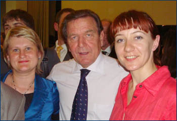

Факультет международных отношений в структуре ВГУ существует с 2002 г.
Научно-исследовательская деятельность на факультете осуществляется на регулярной основе
Основными направлениями НИР к 2022 г. являются:
Мировые экономические процессы : стратегии, механизм, инструментарий
Развитие информационно-коммуникационных технологий в международной экономике•
Институциональные аспекты внешнеэкономической политики государств•
Совершенствование аналитического обеспечения достижения целей устойчивого развития международных корпораций•
Кластерный подход в обеспечении международной конкурентоспособности регионов•
Инновационные процессы развития международных корпораций•
Проблемы взаимодействия таможенных органов и участников внешнеэкономической деятельности в современных условиях•
Интегрированная отчетность международных корпораций: информационное обеспечение и анализ•
Тенденции, факторы и проблемы международного маркетинга
Изучение региональной экономики и международной экономической интеграции
Изучение экономик европейских стран
Комплексное зарубежное регионоведение
Международные политические процессы
Европейская интеграция и европейское право
Международное право и защита прав человека
Исследования миграции
Исследования национализма и идентичностей
Междисциплинарные региональные исследования в области политики и экономики
Представленные направления отражены в публикационной активности сотрудников ФМО.
В период с 2002 по 2022 г. сотрудниками и студентами ФМО опубликовано более 80 монографий и 2650 статей на русском, английском, немецком, испанском, польском, украинском, белорусском, болгарском языках в российских и зарубежных научных журналах, сборниках статей и материалах региональных, национальных и международных конференций
Центр восточноевропейских исследований
Центр существует на Факультете международных отношений Воронежского университета с 2005 года.
Центр возглавляет доцент, к.и.н. О.Ю. Михалев.
В работе Центра принимают участие аспирантка кафедры международных отношений и регионоведения Е.А. Слинько, к.и.н. преп. кафедры международных отношений и регионоведения М.В. Кирчанов.
В число научных направлений, разработка которых ведется сотрудниками центра, входит:
изучение процессов политического транзита в странах Большой Восточной Европы;
изучение международных отношений в Восточной Европе;
проблемы региональной интеграции и сотрудничества;
национальные и этнические конфликты, национализм в Большой Восточной Европе;
политические партии и движения в странах Центральной и Восточной Европы.
Центр активно сотрудничаетс с польскими научно-исследовательскими организациями и университетами. За период существования Центра был издан ряд монографий и коллективных сборников статей, а его сотрудники принимали активное участие в российских м еждународных научных конференциях, посвященных восточноевропейским исследованиям.
Центр латиноамериканских исследований (Centro de Estudios de América Latina, Centro de Estudos Latino-Americanos)
Центр (созданный на базе Воронежского отделения Российской Ассоциации исследователей Иберо-Американского Мира) существует на Факультете международных отношений Воронежского государственного университета с 2006 года.
Центр возглавляет профессор, доктор политических наук А.А. Слинько. В работе Центра принимают участие к.и.н. преп. кафедры международных отношений и регионоведения М.В. Кирчанов, а также студенты, специализирующиеся по Кафедре международных отношений и регионоведения.
В число научных направлений, разработка которых ведется сотрудниками центра, входит:
изучение политических процессов в странах Латинской Америки;
международные отношения в Латинской Америке;
проблемы развития региональной и международной интеграции;
проблемы левого и революционного движения;
политические процессы в Бразилии;
проблемы экономического развития государств Латинской Америки.
С 2006 года по инициативе Центра выходит сборник «Политические исследования в Латинской Америке: история и современность». К настоящему времени вышло 8 выпусков, сборнику присвоен международно зарегистрированный ISSN (ISSN 2219-1976), создан сайт издания. Среди авторов сборника российские и американские латиноамериканисты. Сборник является единственным региональным периодическим изданием посвященным Латинской Америке.
За период существования Центра был издан ряд монографий (проф. А.А. Слинько, к.и.н. преп. М.В. Кирчанов) и коллективных сборников статей, а его сотрудники принимали активное участие в российских и международных научных конференциях, посвященных латиноамериканским исследованиям.
Деятельность Центра непосредственно связана с учебных процессом на факультете международных отношений. Проф. А.А. Слинько читает курс «США и Латинская Америка: проблемы взаимодействия». М.В. Кирчановым читается курс «Модернизационные процессы в Западном полушарии». Студенты и аспиранты кафедры международных отношений принимают активное участие в подготовке к печати журнала «Политические исследования в Латинской Америке: история и современность», занимаясь написанием оригинальных статей, а также выполняя переводы с испанского и английского языков.
Центр исследования проблемной государственности
Центр исследования проблемной государственности создан 30.11.2016 г. при кафедре международных отношений и мировой политики ФМО ВГУ с целью изучения процессов возникновения и деградации государств в контексте становления постбиполярного мира.
Руководителем Центра является к.и.н., доцент В.И. Сальников.
В работе центра принимают участие доц. О.Ю. Михалев, доц. И.В. Касымов, преп. С.В. Вейс.
В число научных направлений, разработка которых ведется сотрудниками Центра, входят:
изучение процессов деградации государств;
исследование непризнанных государств: механизмов и тенденций их образования, функционирования, суверенизации;
исследование связи революционных процессов и повстанчества с существованием зон проблемной государственности;
изучение влияния геоэкономики, геополитики и мирополитического фактора на существование зон проблемной государственности;
изучение положения с соблюдением прав человека на территории проблемных государств;
разработка научных рекомендаций для выработки и реализации внешней политики России в отношении «проблемных государств».
Предполагается установление сотрудничества с ведущими отечественными и зарубежными исследовательскими и правозащитными центрами и организациями, работающими на данном направлении; организация научных конференций и публикация материалов, посвященных проблемным государствам; установление деловых контактов с государственными и общественными структурами, а также жителями проблемных государств на взаимовыгодной основе.
Центр германских политических исследований (Zentrum für politische Forschung Deutschlands)
Центр существует на Факультете международных отношений Воронежского университета с 2007 года и продолжает традиции германистики, заложенные проф. д.и.н. В.А. Артемовым.
Центр возглавляет доцент, к.и.н. С.И. Дмитриева.
В число научных направлений, разработка которых ведется сотрудниками Центра, входит:
история немецкой социал-демократии;
политические процессы в ФРГ;
политические партии и движения в Германии;
внешняя политика ФРГ;
Германия в европейской интеграции;
российско-германские взаимоотношения;
национализм, экстремизм и радикализм в ФРГ.

Доц. Е.В. Бадалова и С.И. Дмитриева с бывшим канцлером ФРГ Г. Шредером
С 2010 года Центр издает сборник статей «Германия на перекрестках истории. Проблемы внутренней и внешней политики в контексте трансформаций международных отношений».
За период существования Центра был издан ряд монографий и коллективных сборников статей, а его сотрудники принимали активное участие в российских и международных научных конференциях, посвященных германским исследованиям. Сотрудники Центра имеют публикации, посвященные германской тематике как в российских, так и международных научных изданиях на русском и немецком языках.